For teams that run SUSE Harvester HCI
One modern console for all your Harvester clusters
harvester-ops brings every cluster into a single interface, turns long operations into one tracked gesture, and keeps a record of everything that happens, from your console or from anywhere else.
Open source. Airgap-ready. Five languages. v1.86.0
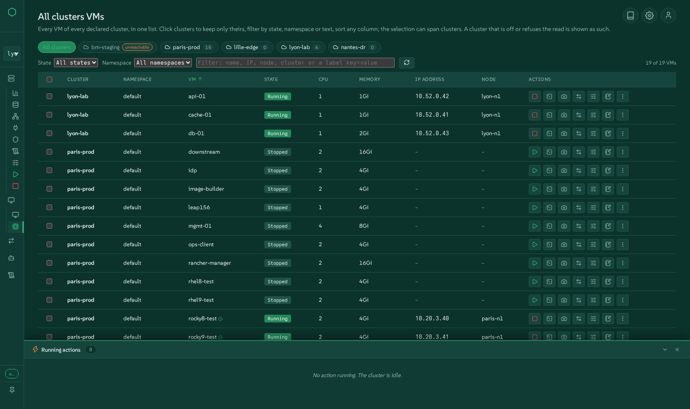
Every cluster, one interface
Declare as many Harvester clusters as you run. Switch in one click, list every VM of every cluster in one table, see which cluster is off or refuses you, without the others waiting.
Automation made simple
Graceful shutdown and startup, upgrades, warm VMware migrations, Kubernetes clusters, bare-metal installs, Terraform: long operations become one gesture, with the same scripts behind the button and the command line.
Every event tracked
Each action runs as a tracked job with live steps, logs and history. Changes made outside the console, in Harvester, kubectl or Rancher, show up too.
See it alive, in your browser
The demo is the real interface of this release, running on simulated clusters: five clusters, VMs to start and stop, VMware migrations in progress, an actions dock that moves. Every gesture works and nothing is changed.
Everything harvester-ops does
Grouped the way operators think about their work. Each family links to the demo screen where you can try it.
All your clusters in one place
A single console for a fleet of Harvester clusters, physical or nested, near or far.
- Declare clusters from the interface or the configuration file; switching cluster really switches every view.
- All clusters VMs: every VM of every cluster in one table, filtered by cluster, state, namespace or text, sorted on any column, with start, stop, restart, migrate and the full actions menu on a selection that spans clusters.
- Powered-off or unreachable clusters are said as such, instantly, instead of freezing the page.
- Migrations across all clusters in one table or on a shared timeline.
- Notes on clusters, nodes and VMs, kept by the console.
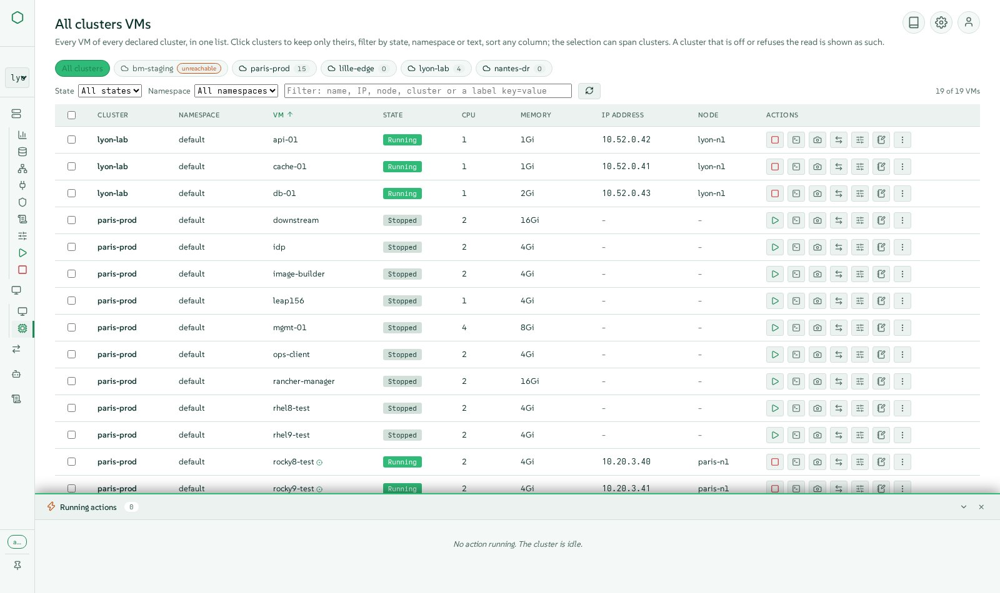
Virtual machines, as in Harvester and more
Everything Harvester offers on a VM, in modern windows that stay open side by side.
- Create VMs with images, templates, cloud-init, networks, disks and placement, checked against the space really allocatable.
- The full actions menu: start, stop, restart, pause, soft reboot, clone, template, YAML, backups, snapshots, delete with its volumes.
- Live changes: CPU and memory hot-plug, CD-ROM, network cards, storage migration, access credentials.
- A VNC console several people can share at once, with an AZERTY-safe keyboard, and a serial console.
- Snapshots, backups, restores and their schedules; live migration between nodes.
- Move a VM to another cluster, export it to an archive, import it elsewhere, with rate, time left and speed control.
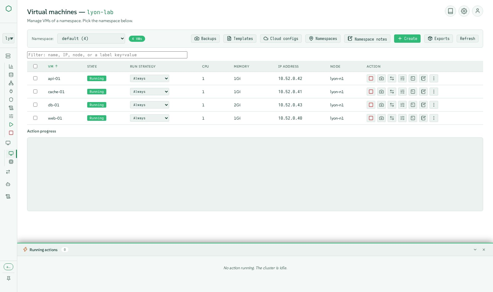
See the cluster the way it is built
Views drawn from the live cluster, one block per object, in the spirit of VMware tools.
- Overview with metrics, a cluster map of nodes and VMs, events and usage gauges.
- Fabric, network and storage maps: one block per switch, network, volume and disk.
- The network path of a VM, from its card down to the physical port.
- Hosts as in Harvester: disks, tags, huge pages, KSM, CPU manager, out-of-band management through harvester-seeder, maintenance mode with live drain follow-up.
- Namespaces, Rancher projects, quotas and members.
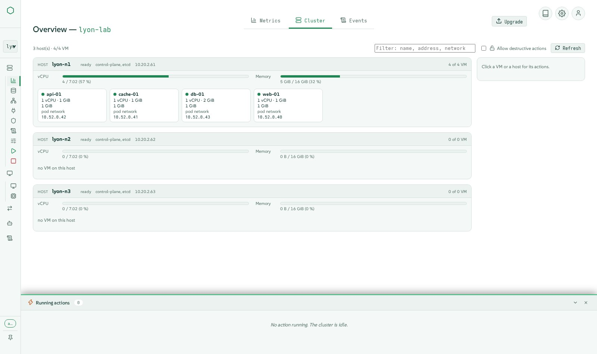
Storage you can trust
Longhorn and images, explained instead of just listed.
- Volumes, images, storage classes (including encrypted ones), snapshots and backups, with create, edit and delete in windows.
- Degraded volumes explained and fixed safely: missing replicas, unplaced replicas, rebuilds in progress.
- Allocatable space computed the way Longhorn decides, so a VM is never planned where it cannot fit.
- LVM storage and CDI image downloads where Harvester supports them.
- Backup target settings and support bundles.
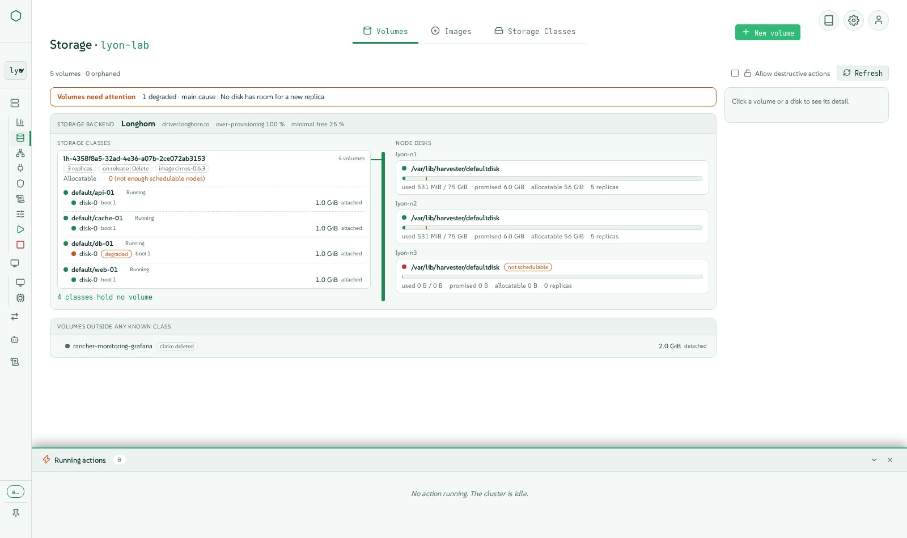
Networks, overlay and underlay
From VM networks to kube-ovn VPCs, with forms and a live diagram.
- VM networks, cluster networks and their configurations, load balancers and IP pools, host networks.
- Storage, migration and RWX networks set in one place.
- kube-ovn: VPCs, subnets, NAT gateways, provider networks, network policies, health.
- Static IPs applied for real on overlay networks.
- PCI, USB and SR-IOV devices passed through to VMs.
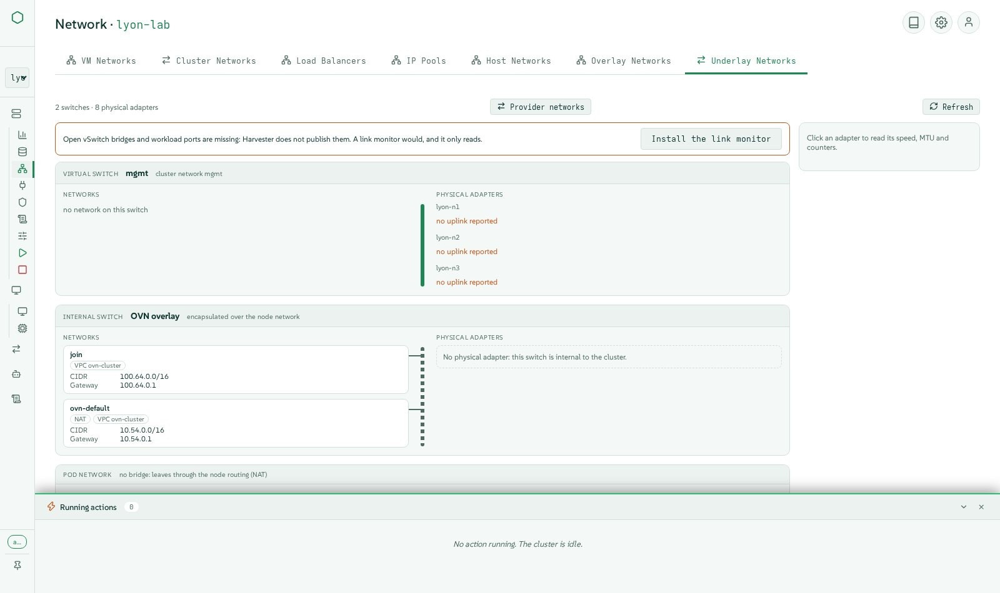
Leave VMware, warm and visible
Dozens of VMs moved from vCenter to Harvester with Forklift, with the shortest possible cutover.
- Forklift installed for you, with its VDDK image built and pushed to your registry.
- vCenter sources declared, inventory browsed, waves composed with network and storage mappings.
- Warm migration: incremental copies while the VM keeps running, then a scheduled or immediate switchover.
- Waves shown as blocks or as lanes on a timeline, across every cluster.
- Rollback to the source, which says when VMware stops the source on a question, and checks that refuse a wave whose MAC address is already taken.
- VM imports from VMware, OpenStack or an OVA archive.
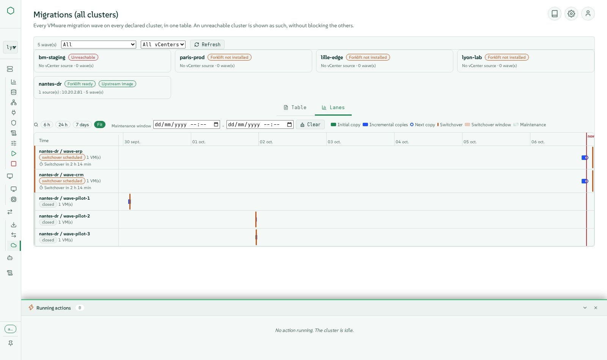
Cluster lifecycle without the stress
The operations nobody wants to do by hand at 2 a.m.
- Graceful shutdown in eight ordered steps: preflight, etcd snapshot, VM snapshots, ordered VM stop, storage maintenance, cordon, workers, control plane.
- Startup in five steps, Wake-on-LAN included, restarting only the VMs the shutdown stopped, in their groups and order.
- VM groups that stop and start in sequence between groups and in parallel inside a group.
- Harvester upgrades from the interface, with an airgap ISO when there is no internet.
- Node maintenance with the drain followed live and blockers explained.
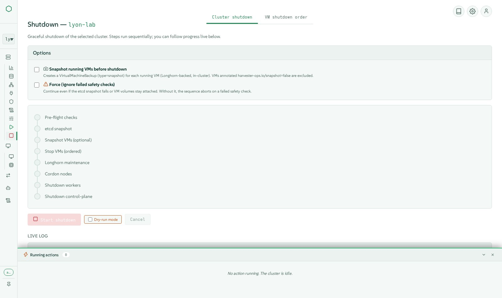
Infrastructure as code and bare metal
From empty servers to Kubernetes clusters, from one console.
- Bare-metal installs of Harvester through Redfish virtual media: discovery, disks and pools, multi-node profiles, installs in batches, the cluster declared by itself.
- Kubernetes clusters (RKE2) created on Harvester with Cluster API, with load-balanced services through CAAPH and kube-vip.
- Terraform declarations kept by the console, one state each, the plan read before applying; OpenTofu and the Harvester provider embedded.
- Monitoring and logging: Prometheus metrics, alerting rules, log flows and outputs, with the configuration checks Harvester leaves silent.
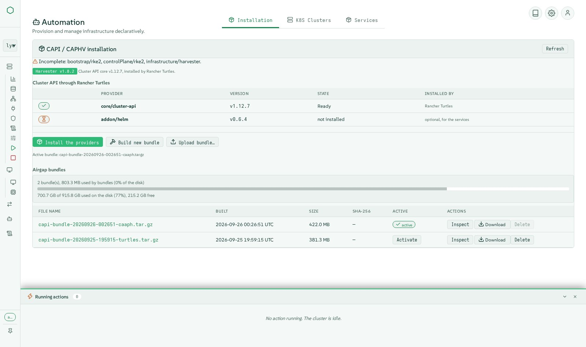
Every action tracked, every event visible
Know what happened, who did it and how it ended.
- Every gesture is a tracked action with live steps in the actions dock, then logs and history in the Activity tab.
- Changes made outside the console (Harvester UI, kubectl, Rancher) are detected and listed too.
- Activity filtered by cluster, status and text; a durable history of the last runs with their logs.
- Cluster events and usage on the overview; what the cluster refused you is said instead of an empty view.
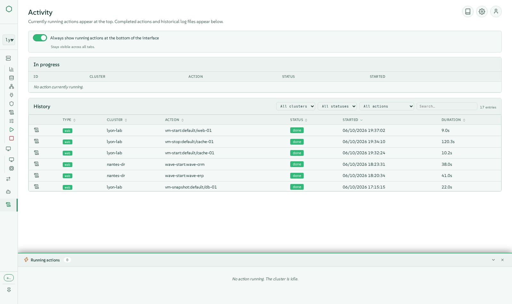
Secure by default
Built for production teams, with least privilege everywhere.
- Sign-in is mandatory, with console accounts and roles (viewer, operator, admin).
- Single sign-on through Rancher: actions run with the person's own Rancher rights, never with a shared admin.
- Identity delegated to the cluster through Kubernetes impersonation, so cluster RBAC applies to each person.
- Rate limits, validated inputs, scoped kubeconfigs, secrets never echoed.
- Secrets and SSH keys of the cluster managed in typed forms.
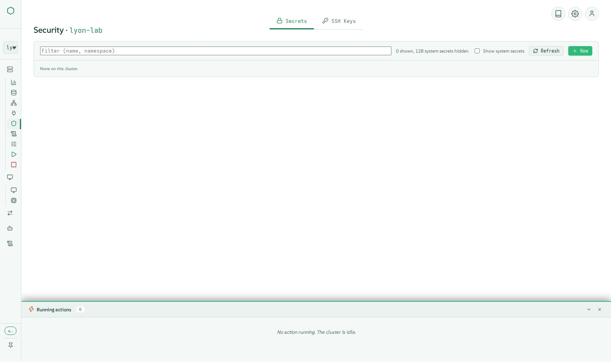
Ready for production, even offline
A signed bundle that installs and updates itself without internet.
- One signed tarball with the container image, Cluster API bundle, OpenTofu and the Terraform provider: ready to use in an airgap site.
- Updates from the interface, online or from an uploaded archive, signature checked, automatic rollback if the new version does not answer.
- Measured for large fleets: shared reads and worker processes, 60 clusters at about four CPU cores.
- Five languages (English, French, German, Spanish, Italian), five themes in dark and light, tooltips everywhere, keyboard friendly.
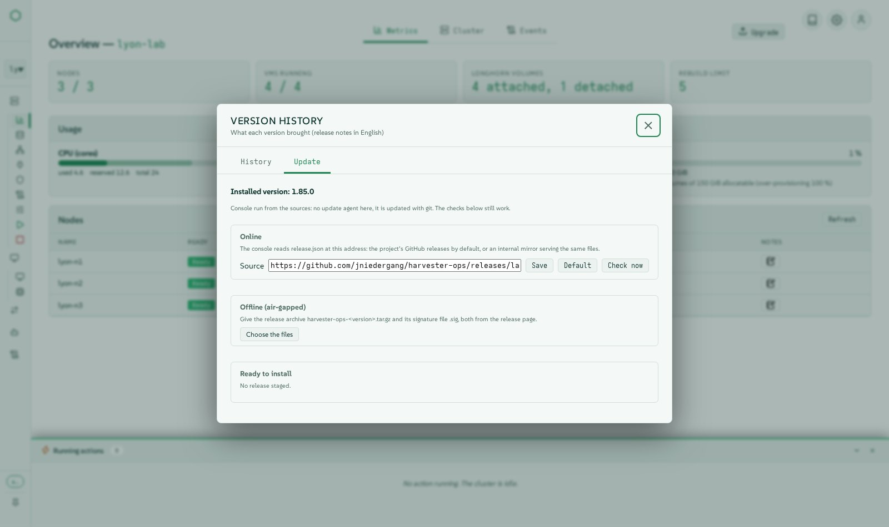
At least everything the Harvester UI does
Each menu of harvester-ops offers at least the functions of the Harvester 1.9 interface, with a modern experience on top. A function-by-function parity table is published with every release.
Read the parity tableUnder the hood
A small, auditable stack: no JavaScript framework, no runtime download, every action a script you can run yourself.
Architecture
Browser
Vanilla JavaScript modules, Server-Sent Events for live steps, WebSockets for consoles.
Console
Flask application serving the interface and a REST API, with sign-in, roles, rate limits and an actions engine (SQLite in WAL mode).
Scripts
Every operation is a bash or Python script under bin/, run by the console as a tracked action and usable alone from the command line.
Clusters
Read through the Kubernetes API directly (pooled connections, shared reads, worker processes) or kubectl; acts with the identity of the person.
Design principles
- Command line and interface are equal: the interface never bypasses the scripts.
- Every mutating gesture is a tracked action, visible live and kept in history.
- Airgap first: no network access needed at runtime, everything ships in the bundle.
- Least privilege: the cluster sees the person, not the console.
- Tested for real on Harvester clusters before each release, not only in unit tests.
Technologies and versions
Read from the release itself when this page was built. (v1.86.0)
Runtime
| Component | Version | Role |
|---|---|---|
| Python | 3.11 | language of the console and its tools |
| SUSE BCI Python image | registry.suse.com/bci/python:3.11 | base of the container image |
| SQLite | WAL | actions history and notes, no database server |
Python libraries
| Component | Version | Role |
|---|---|---|
| bcrypt | 3.2.2 | password hashing backend |
| flask | 3.0.3 | web framework of the console |
| flask-limiter | 4.1.1 | rate limits on every mutating endpoint |
| flask-sock | 0.7.0 | WebSockets for the VNC and serial consoles |
| itsdangerous | 2.2.0 | signed session cookies |
| jinja2 | 3.1.6 | page templates |
| markdown | 3.6 | release notes and documentation rendering |
| passlib | 1.7.4 | password hashing of console accounts |
| prometheus-client | 0.25.0 | metrics endpoint |
| pyyaml | 6.0.2 | configuration and Kubernetes manifests |
| werkzeug | 3.1.8 | WSGI toolkit under Flask |
| y-py | 0.6.2 | shared editing of notes |
Embedded browser libraries
| Component | Version | Role |
|---|---|---|
| Lucide icons | 1.44.0 | the monochrome icon set |
| xterm.js | 5.5.0 | serial console of VMs |
| noVNC | 1.7.0 | graphical console of VMs, shared between people |
| Tiptap | embedded | rich-text notes |
| Yjs | 13.6.20 | real-time shared notes |
Tools in the image
| Component | Version | Role |
|---|---|---|
| kubectl | v1.30.5 | Kubernetes client, fallback of the direct API reads |
| yq | v4.44.3 | YAML processing in the scripts |
| OpenTofu | 1.12.6 | applies Terraform declarations (MPL-2.0) |
| xorriso | openSUSE package | Harvester ISO remastering for bare metal |
| OpenSSH client | openSUSE package | node access for shutdown and startup |
| terraform-provider-harvester | 1.9.0 | Harvester resources in Terraform declarations |
Cluster API bundle
| Component | Version | Role |
|---|---|---|
| cluster-api | v1.10.4 | Cluster API component |
| cabp-rke2 | v0.16.1 | Cluster API component |
| cacp-rke2 | v0.16.1 | Cluster API component |
| caphv | v0.2.8 | Cluster API component |
| cert-manager | v1.16.2 | Cluster API component |
| caphv-clusterclass | v0.2.8 | Cluster API component |
| turtles-rke2-bootstrap | v0.25.2 | Cluster API component |
| turtles-rke2-control-plane | v0.25.2 | Cluster API component |
| turtles-caphv | v0.10.1 | Cluster API component |
| turtles-caaph | v0.6.4 | Cluster API component |
Harvester
| Component | Version | Role |
|---|---|---|
| Harvester HCI | v1.7.x, v1.8.x, v1.9.x | clusters operated (tested for real on v1.8 and v1.9) |
| Forklift | v1.8.2 images | warm VMware migrations |
| Rancher | 2.14 | single sign-on and inherited rights (OIDC provider) |
Install in minutes
Download the signed bundle from the GitHub releases, check it, run the installer. It asks the few questions it needs, including your own certificates if you want them.
- 1Download the release and its signature
- 2Verify the checksum
- 3Run the installer as root
- 4Open the console and sign in
V=1.86.0
curl -LO https://github.com/jniedergang/harvester-ops/releases/download/v$V/harvester-ops-$V.tar.gz
curl -LO https://github.com/jniedergang/harvester-ops/releases/download/v$V/harvester-ops-$V.tar.gz.sha256
curl -LO https://github.com/jniedergang/harvester-ops/releases/download/v$V/harvester-ops-$V.tar.gz.sig
sha256sum -c harvester-ops-$V.tar.gz.sha256
tar xzf harvester-ops-$V.tar.gz && cd harvester-ops-$V
sudo ./install.shNeeds a Linux host with Podman and systemd, and access to the Kubernetes API of your clusters.
Watch it work
Short captioned clips filmed on real clusters, in English and French.
Watch the videos on GitHub